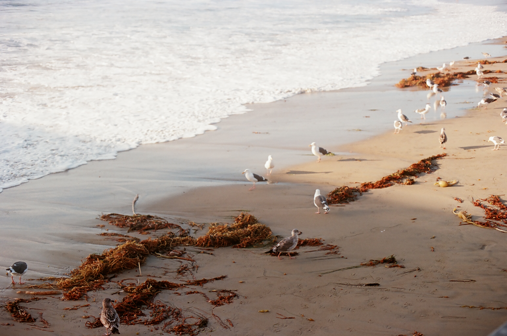
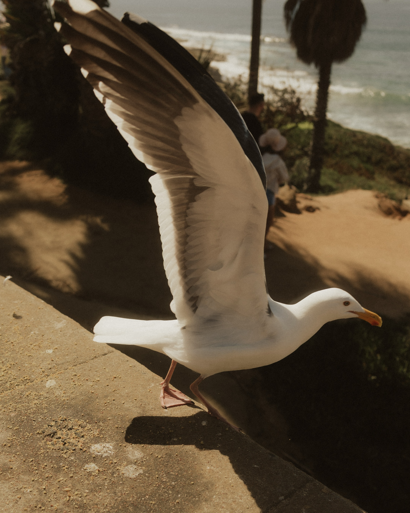

This is a transcripted podcast from NPR featuring Mary Louise Kelly Host, Neeltje Booger, and Ari Shapiro-Host. "A new study suggests that seagulls study human behaviors when trying to locate food. Researchers claim it's one of the first studies of this kind on non-domesticated animals. ;MARY LOUISE KELLY, HOST: In the U.K., in the county of Cornwall, herring gulls are everywhere.
NEELTJE BOOGERT: So you wake up in the morning with them calling. You know, you go to bed - they're still calling. (Laughter) Their feces are just, you know, always flooded over your house and your car and things like that. And you're often hit by poop just walking around. ARI SHAPIRO, HOST: That's Dr. Neeltje Boogert, a senior lecturer at the University of Exeter. There and in many parts of the U.S. and the U.K., the herring gull is the most common variety of the bird many of us call a seagull, and they're not very well liked. Boogert recently surveyed people on campus.
BOOGERT: About 30% likes them, and 70% really hates them. SHAPIRO: Even many of her scientific colleagues don't have much love for the gulls. BOOGERT: For people that do study biology, it's 50-50 (laughter). KELLY: Dr. Boogert is one of the gull lovers. And along with several other scientists, she's been studying how gulls interact with humans to better understand our interspecies conflict, specifically when it comes to food. SHAPIRO: Last year, her team found that gulls will actually hesitate longer before snatching your french fry if you stare them down.
BOOGERT: And I think that's because they know you're onto them, right? I mean, you're staring at them. It's like, you know, someone stealing something from your shop. If you stare at the shoplifting thief, it's not going to proceed, is it? SHAPIRO: And now her team has found that gulls prefer to peck at food that they have seen in human hands. They tested that by tempting gulls all over Cornwall with plastic-wrapped granola bars. One bar her collaborator picked up and handled; the other she left alone. And after dozens of tests..."Copyright © 2020 NPR. All rights reserved. Visit our website terms of use and permissions pages at www.npr.org for further information.